📡
Sparepart VSAT
Pembuatan bracket, mounting, pipa tiang (pole), clamp, feed arm, dan non-penetrating mount (NPM) untuk antena VSAT, termasuk mounting dan tiang untuk antena Starlink.
PT Delta Teknik Cakrawala melayani pembuatan sparepart VSAT, pengelasan, bubut, dan fabrikasi logam berdasarkan gambar kerja maupun sampel, dengan hasil yang presisi, kuat, dan tepat waktu.
Tahun Pengalaman
Klien Perusahaan
Proyek Selesai
Teknisi & Welder
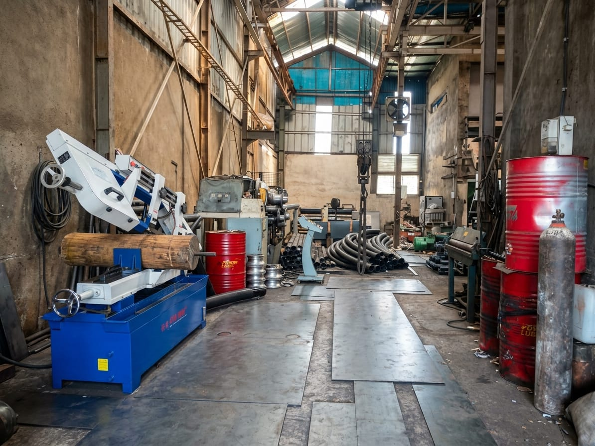
PT Delta Teknik Cakrawala adalah perusahaan jasa teknik berbasis di Bekasi, Jawa Barat, yang bergerak di bidang pembuatan sparepart VSAT, pengelasan (welding), permesinan (bubut & milling), serta fabrikasi konstruksi logam. Kami melayani perusahaan telekomunikasi, kontraktor, industri manufaktur, hingga kebutuhan perorangan, mulai dari satuan hingga produksi dalam jumlah besar.
Menjadi perusahaan jasa teknik dan fabrikasi terpercaya dengan kualitas yang bersaing di tingkat nasional.
Menghasilkan produk yang presisi, kuat, dan tepat waktu dengan harga yang kompetitif serta layanan yang responsif.
Dari gambar kerja hingga barang jadi, semuanya kami kerjakan di workshop sendiri.
Pembuatan bracket, mounting, pipa tiang (pole), clamp, feed arm, dan non-penetrating mount (NPM) untuk antena VSAT, termasuk mounting dan tiang untuk antena Starlink.
Pengelasan SMAW, MIG/MAG, dan TIG untuk material besi, stainless steel, dan aluminium.
Pembuatan shaft, bushing, flange, baut khusus, dan komponen custom dengan toleransi presisi.
Rangka baja, platform, tangga, railing, kanopi, dudukan mesin, dan struktur logam lainnya.
Pemotongan dan penekukan plat besi, stainless, maupun aluminium sesuai ukuran yang dibutuhkan.
Pengecatan, galvanis, dan powder coating, serta perbaikan komponen dan struktur yang rusak.
Kirimkan gambar kerja, sampel, atau foto komponen yang dibutuhkan.
Kami hitung material, biaya, dan estimasi waktu pengerjaan.
Pengerjaan di workshop oleh teknisi dan welder berpengalaman.
Pengecekan dimensi, kekuatan las, dan finishing sebelum dikirim.
Barang dikirim ke lokasi Anda atau dipasang langsung di lapangan.
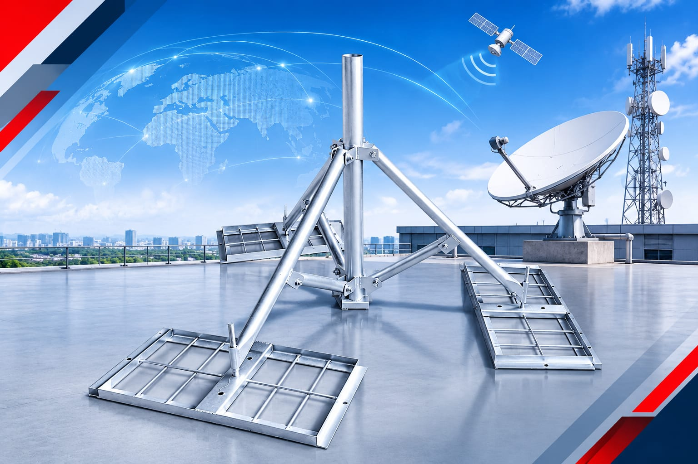
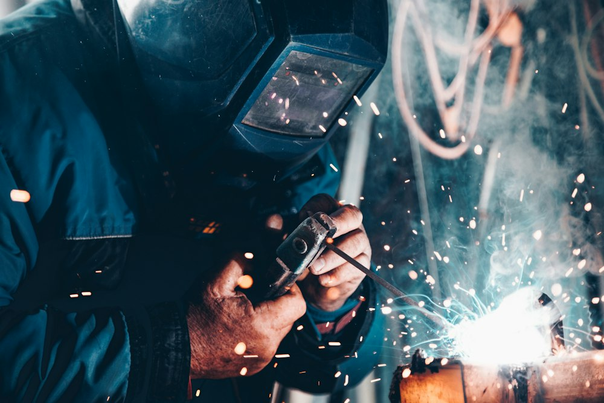
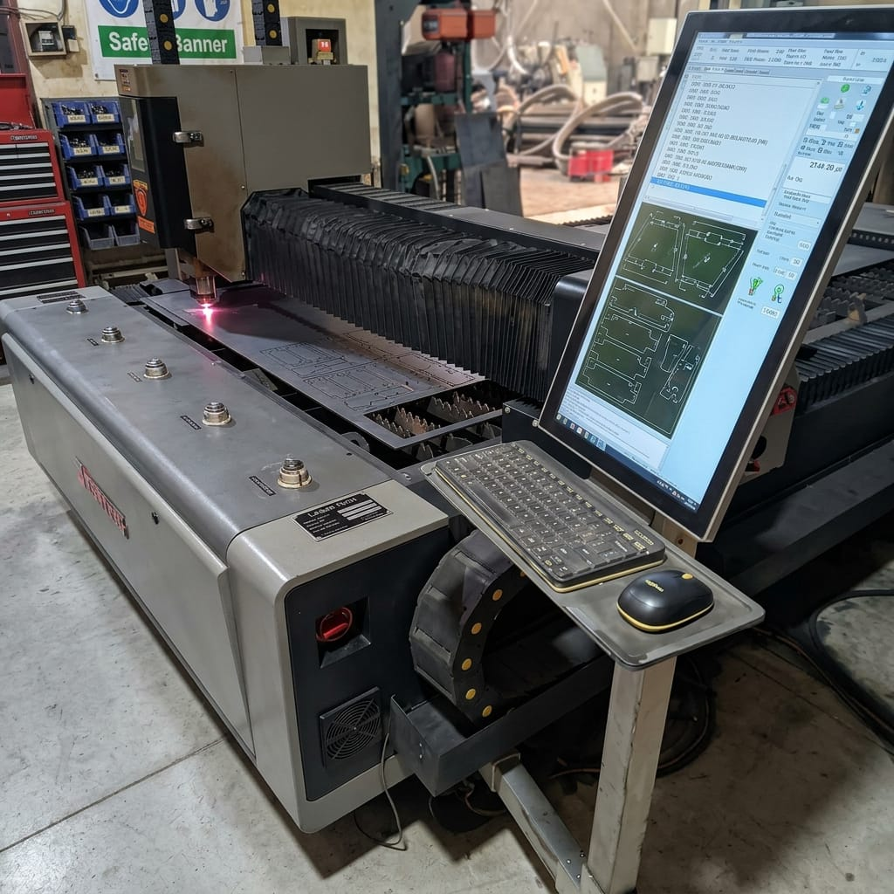
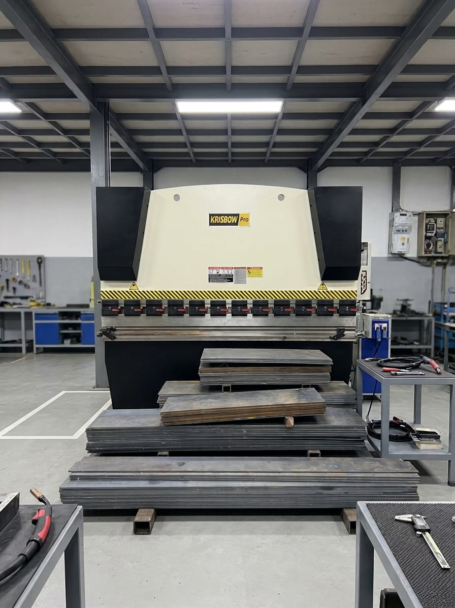
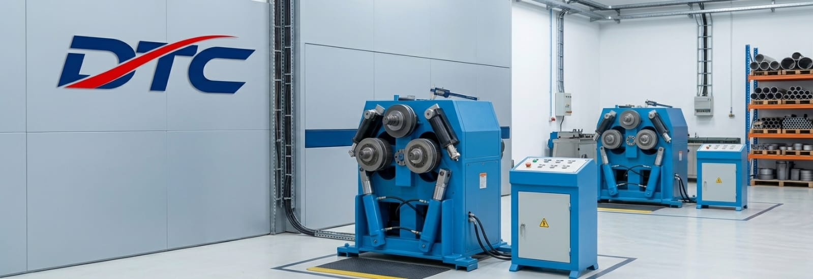
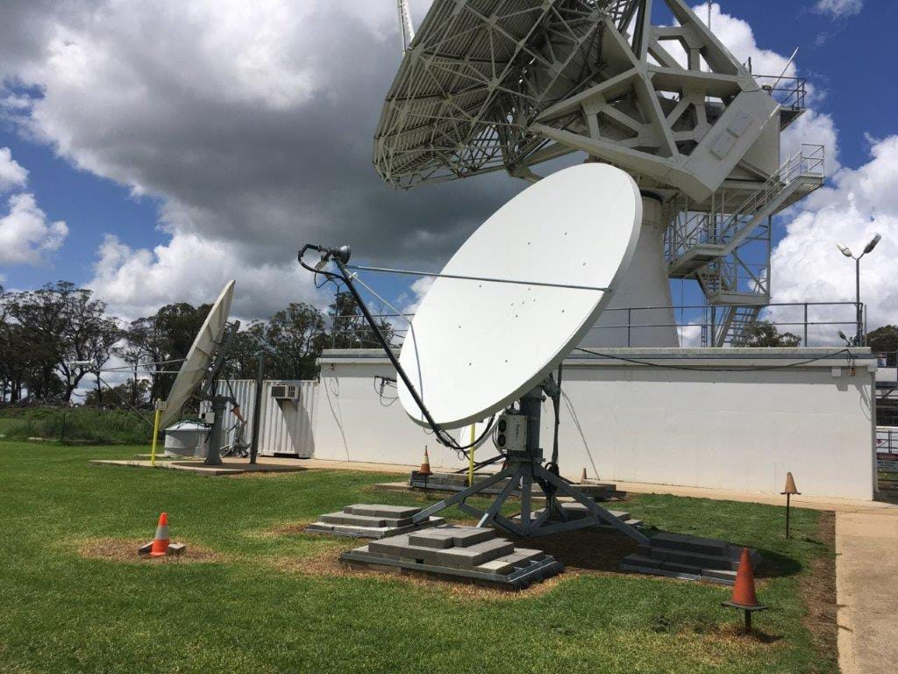
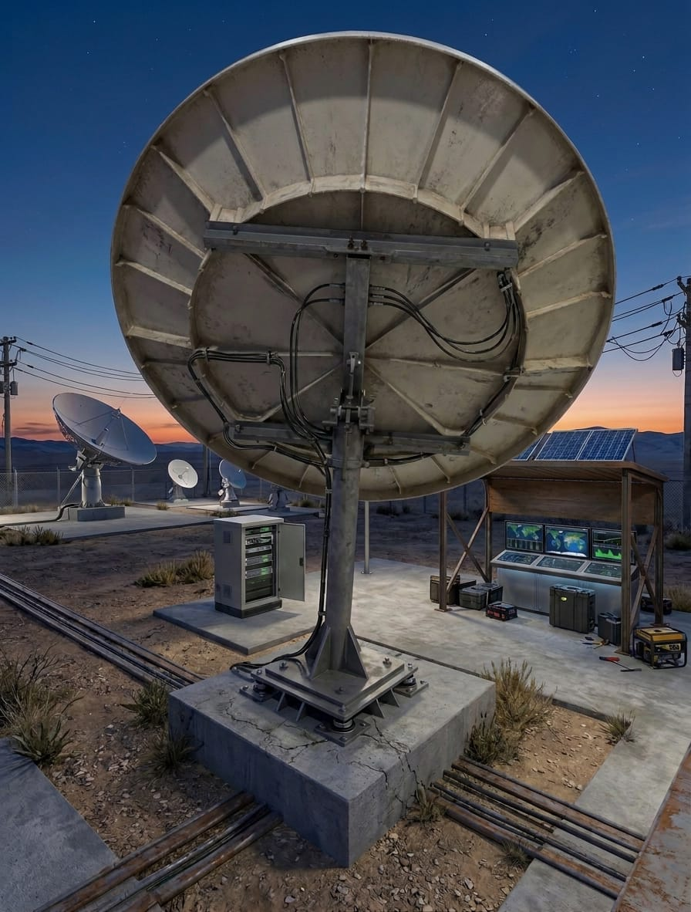
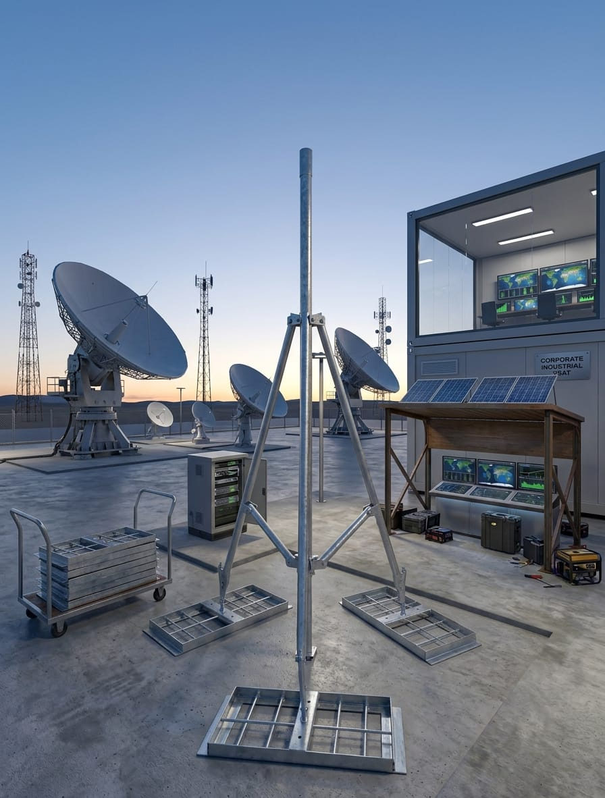
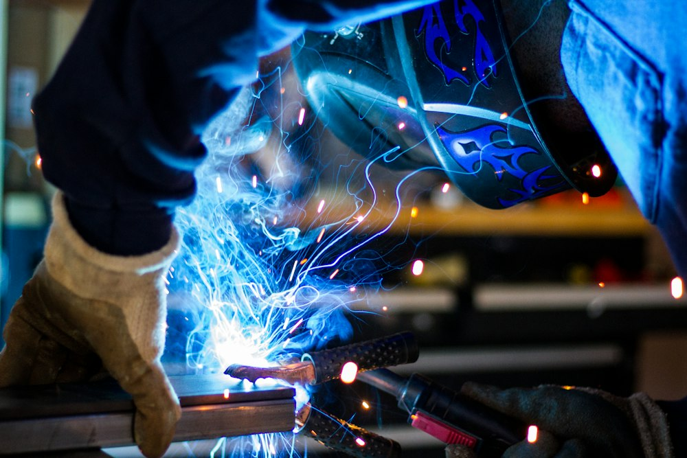
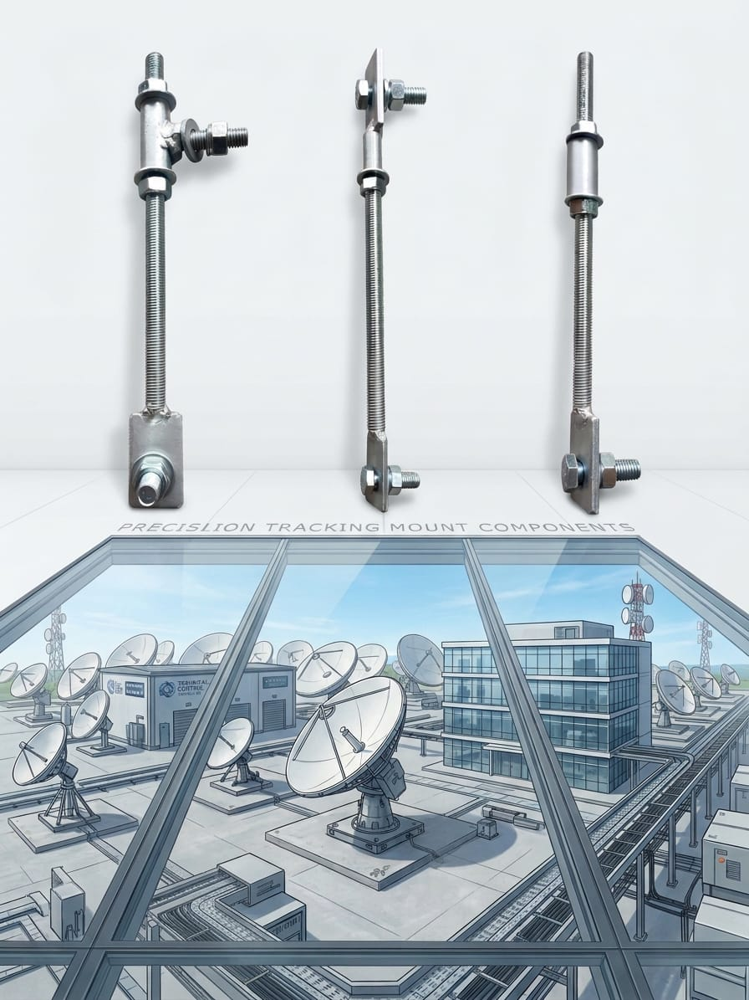
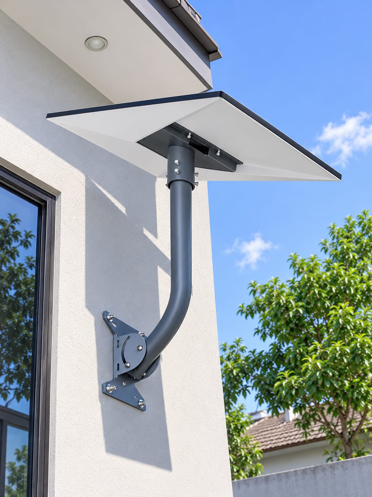
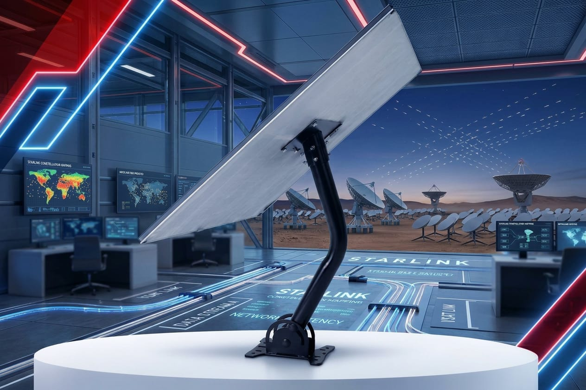
Dikerjakan sesuai gambar kerja dan toleransi yang diminta.
Material berkualitas dan teknik pengelasan yang tepat.
Jadwal produksi jelas dan selalu dikomunikasikan.
Penawaran transparan tanpa biaya tersembunyi.
Ceritakan komponen atau pekerjaan yang Anda butuhkan. Tim kami akan menghubungi Anda dalam 1×24 jam.